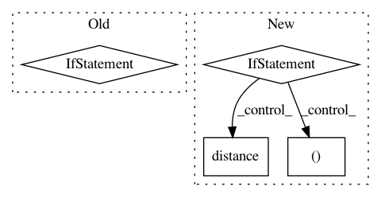

9c1f289b1dce08abf5577319046f00de640393aa,src/biotite/structure/rdf.py,,rdf,#Any#Any#Any#Any#Any#Any#Any#,17
Before Change
)
// calculate distance histogram
if periodic:
distances = distance(center, atom_coord, box=box)
else:
distances = distance(center, atom_coord)
hist, bin_edges = np.histogram(distances, range=interval, bins=bins)
// Normalize with average particle density (N/V) in each bin
bin_volume = (4 / 3 * np.pi * np.power(bin_edges[1:], 3)) - (4 / 3 * np.pi * np.power(bin_edges[:-1], 3))
After Change
// calculate distance histogram
dist_box = box if periodic else None
if center.shape[1] > 1:
distances = np.full((center.shape[1], atom_coord.shape[0],
atom_coord.shape[1]), np.nan)
for c in range(center.shape[1]):
distances[c] = distance(center[:, c:c+1, :],
atom_coord,
box=dist_box)
else:
distances = distance(center, atom_coord, box=dist_box)
hist, bin_edges = np.histogram(distances, range=interval, bins=bins)
// Normalize with average particle density (N/V) in each bin
bin_volume = (4 / 3 * np.pi * np.power(bin_edges[1:], 3))\
In pattern: SUPERPATTERN
Frequency: 3
Non-data size: 4
Instances
Project Name: biotite-dev/biotite
Commit Name: 9c1f289b1dce08abf5577319046f00de640393aa
Time: 2019-02-12
Author: bauer@cbs.tu-darmstadt.de
File Name: src/biotite/structure/rdf.py
Class Name:
Method Name: rdf
Project Name: gboeing/osmnx
Commit Name: fe8f96e9981376e26984bfa4812916d14856dc05
Time: 2020-11-18
Author: boeing@usc.edu
File Name: osmnx/distance.py
Class Name:
Method Name: get_nearest_edge
Project Name: gboeing/osmnx
Commit Name: c46a77985576103fc92ac95395f4d8410f56f029
Time: 2020-12-02
Author: boeing@usc.edu
File Name: osmnx/distance.py
Class Name:
Method Name: get_nearest_edge